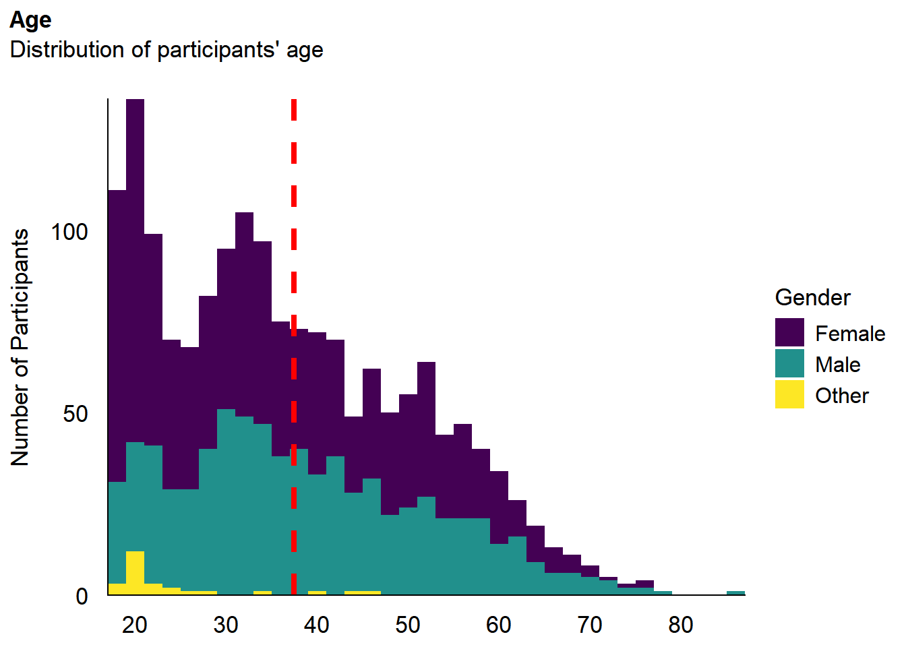
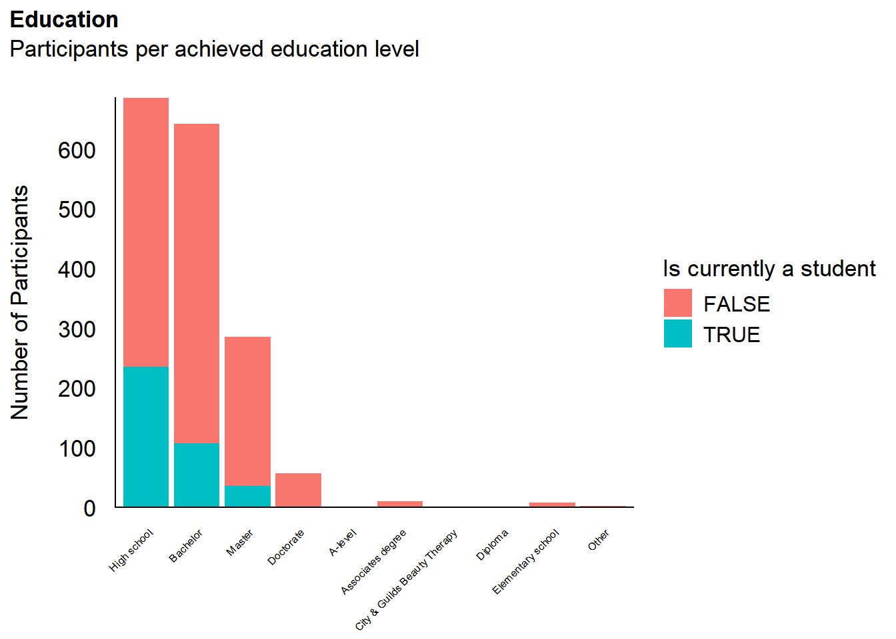
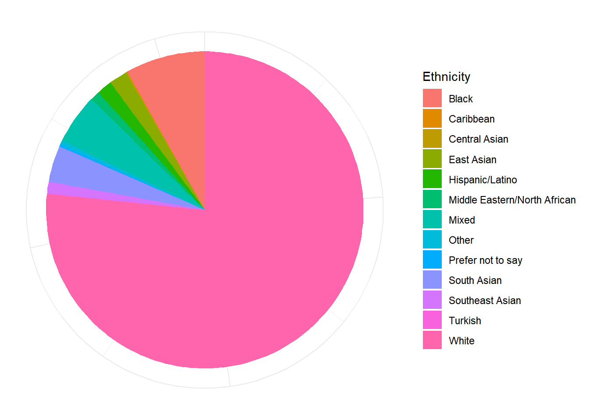
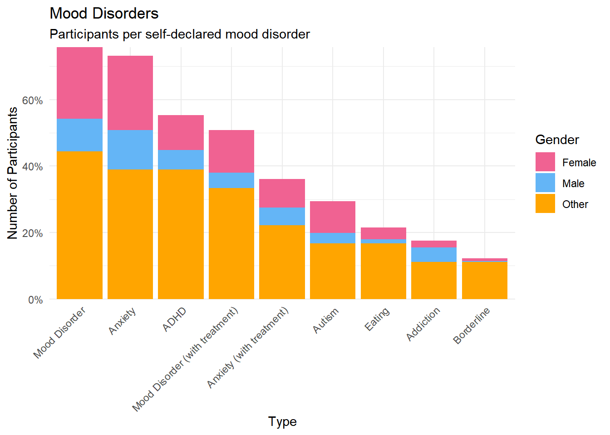
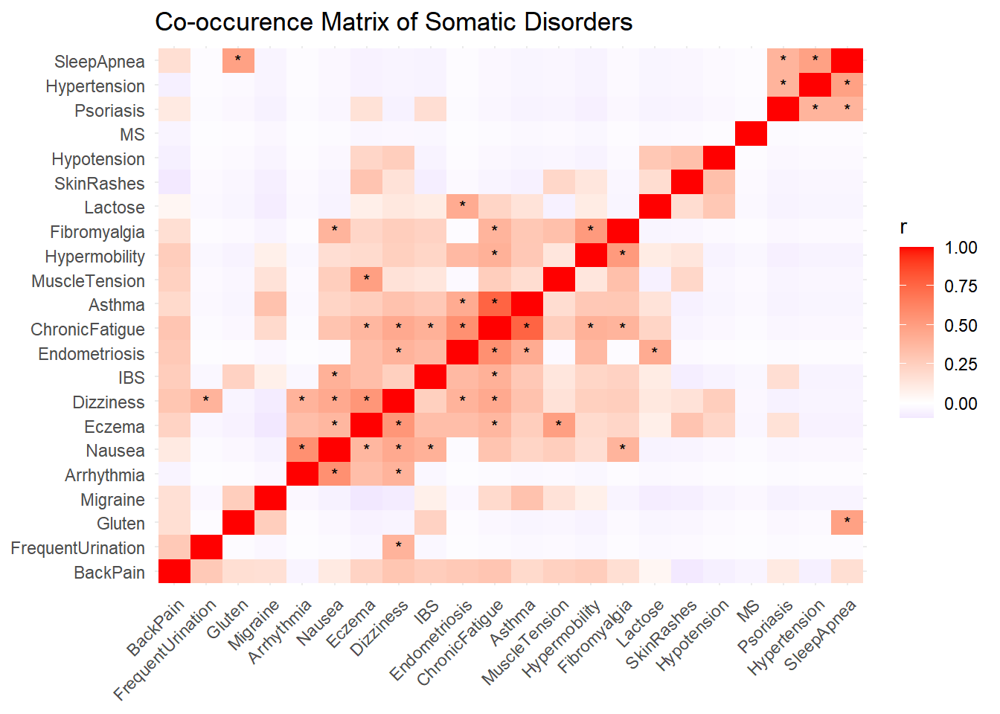
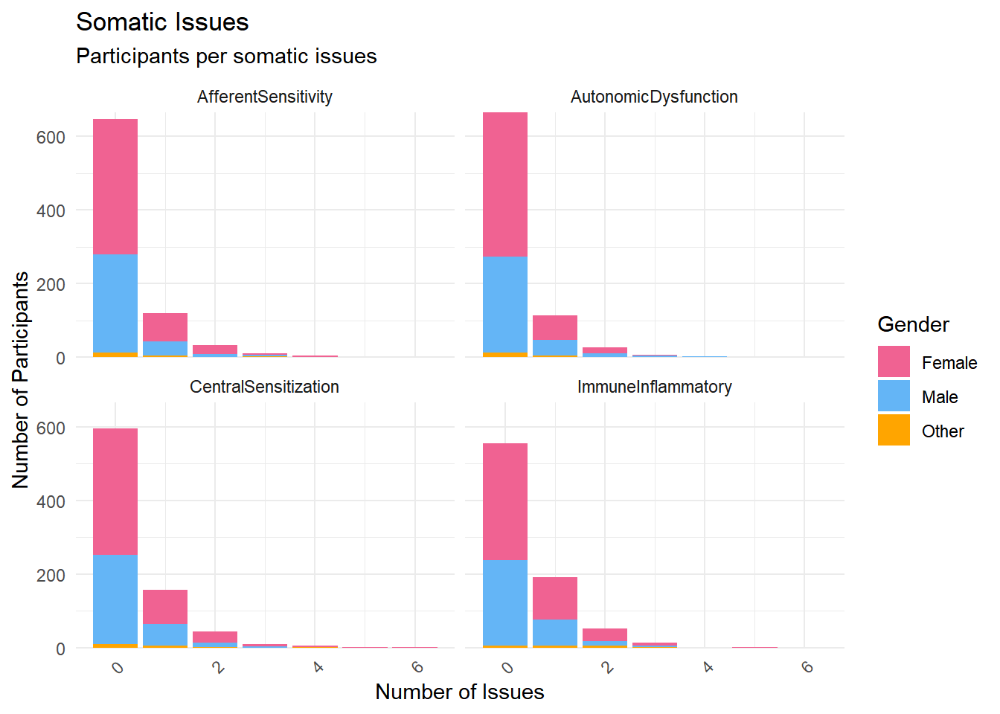

Code
# Load libraries
library(easystats)
library(patchwork)
library(tidyverse)# Load libraries
library(easystats)
library(patchwork)
library(tidyverse)# ---- Drop Mint items that were removed in Study 2 final selection ----------
# These clusters were excluded: UrSe (unstable), StaS (vague), SexO (overlaps SexS),
# CaNo (overlaps CaCo), and any attention check column.
drop_unused_mint <- function(df) {
df |> select(!matches("CaNo|SexO|UrSe|StaS|AttentionCheck", ignore.case = TRUE))
}
# ---- Convert "TRUE"/"FALSE" character columns to 0/1 numeric ---------------
convert_logical_cols <- function(df) {
df |> mutate(across(
where(~ is.character(.x) && all(.x %in% c("TRUE", "FALSE", NA_character_))),
~ as.integer(.x == "TRUE")
))
}
# ---- Align columns between dataframes for merging --------------------------
# Ensures both dataframes have the same columns (fills missing with NA)
align_columns <- function(df1, df2) {
all_vars <- union(names(df1), names(df2))
df1[setdiff(all_vars, names(df1))] <- NA
df2[setdiff(all_vars, names(df2))] <- NA
list(df1 = df1, df2 = df2)
}interoception1_data <- read.csv("https://raw.githubusercontent.com/RealityBending/InteroceptionScale/refs/heads/main/study1/data/data_participants.csv") |>
rename(
# Sexual Arousal Sensitivity (SexS)
MINT_SexS_9 = Sexual_Genital_Q1,
MINT_SexS_7 = Sexual_Genital_Q2,
MINT_SexS_8 = Nociception_Genital_Q1,
# Cardiorespiratory Confusion (CaCo)
MINT_CaCo_11 = Nociception_Respiratory_Q2,
MINT_CaCo_12 = Confusion_Cardiac_Q1,
MINT_CaCo_10 = Confusion_Respiratory_Q1,
# Relaxation Awareness (RelA)
MINT_RelA_5 = Sensitivity_State_Q1,
MINT_RelA_4 = Sensitivity_State_Q2,
MINT_RelA_6 = Sensitivity_State_Q3,
# Cardioception (Card)
MINT_Card_28 = Sensitivity_Cardiac_Q1,
MINT_Card_29 = Sensitivity_Cardiac_Q2,
MINT_Card_30 = Sensitivity_Cardiac_Q3,
# Respiroception (Resp)
MINT_Resp_25 = Sensitivity_Respiratory_Q1,
MINT_Resp_26 = Sensitivity_Respiratory_Q3,
MINT_Resp_27 = Sensitivity_Respiratory_Q4,
# Gastroception (Gast)
MINT_Gast_32 = Sensitivity_Gastric_Q1,
MINT_Gast_31 = Sensitivity_Gastric_Q2,
MINT_Gast_33 = Sensitivity_Gastric_Q3,
# Olfactory Compensation (Olfa)
MINT_Olfa_23 = Sensitivity_Gastric_Q4,
MINT_Olfa_24 = Sensitivity_Gastric_Q5,
MINT_Olfa_22 = Sensitivity_SkinThermo_Q5,
# Dermal Hypersensitivity (Derm)
MINT_Derm_16 = Sensitivity_SkinThermo_Q1,
MINT_Derm_18 = Sensitivity_SkinThermo_Q2,
MINT_Derm_17 = Sensitivity_SkinThermo_Q7,
# Expulsion Accuracy (ExAc)
MINT_ExAc_2 = Accuracy_State_Q2,
MINT_ExAc_1 = Accuracy_Gastric_Q1,
MINT_ExAc_3 = Accuracy_Gastric_Q2,
# Satiety Noticing (Sati)
MINT_Sati_21 = Accuracy_Gastric_Q4,
MINT_Sati_19 = Accuracy_Gastric_Q6,
MINT_Sati_20 = Confusion_Gastric_Q2,
# Urointestinal Inaccuracy (Urin)
MINT_Urin_14 = Accuracy_ColonBladder_Q1,
MINT_Urin_13 = Accuracy_ColonBladder_Q5,
MINT_Urin_15 = Confusion_ColonBladder_Q1
)
# Select first 19 columns (demographics/metadata) + all MINT items
interoception1_df <- interoception1_data |>
select(1:19, contains("MINT_")) |>
mutate(Source = "InteroceptionScale_Study1")
cat("Interoception Study 1 loaded: N =", nrow(interoception1_df), "\n")Interoception Study 1 loaded: N = 559 cat("Study 1 MINT items:", sum(str_detect(names(interoception1_df), "^MINT_")), "/ 33\n")Study 1 MINT items: 33 / 33Interoception Study 1: 191 participants excluded for failing at least one attention check, and 10 based on measures significantly related to the probability of failing attention checks (namely, the multivariate distance obtained with the OPTICS algorithm, Thériault et al., 2024)
# N=737. Full 33-item Mint + MAIA, IAS, BPQ, demographics, clinical outcomes.
interoception2_df <- read.csv("https://raw.githubusercontent.com/RealityBending/InteroceptionScale/refs/heads/main/study2/data/data_participants.csv") |>
mutate(Source = "InteroceptionScale_Study2") |>
rename(
# Deficit metacluster
MINT_Urin_13 = MINT_Deficit_Urin_1,
MINT_Urin_14 = MINT_Deficit_Urin_2,
MINT_Urin_15 = MINT_Deficit_Urin_3,
MINT_CaCo_10 = MINT_Deficit_CaCo_4,
MINT_CaCo_11 = MINT_Deficit_CaCo_5,
MINT_CaCo_12 = MINT_Deficit_CaCo_6,
MINT_Olfa_22 = MINT_Deficit_Olfa_10,
MINT_Olfa_23 = MINT_Deficit_Olfa_11,
MINT_Olfa_24 = MINT_Deficit_Olfa_12,
MINT_Sati_19 = MINT_Deficit_Sati_13,
MINT_Sati_20 = MINT_Deficit_Sati_14,
MINT_Sati_21 = MINT_Deficit_Sati_15,
# Awareness metacluster
MINT_SexS_7 = MINT_Awareness_SexS_19,
MINT_SexS_9 = MINT_Awareness_SexS_20,
MINT_SexS_8 = MINT_Awareness_SexS_21,
MINT_RelA_5 = MINT_Awareness_RelA_28,
MINT_RelA_4 = MINT_Awareness_RelA_29,
MINT_RelA_6 = MINT_Awareness_RelA_30,
MINT_ExAc_3 = MINT_Awareness_ExAc_34,
MINT_ExAc_1 = MINT_Awareness_ExAc_35,
MINT_ExAc_2 = MINT_Awareness_ExAc_36,
# Visceroception metacluster
MINT_Card_28 = MINT_Sensitivity_Card_37,
MINT_Card_30 = MINT_Sensitivity_Card_38,
MINT_Card_29 = MINT_Sensitivity_Card_39,
MINT_Resp_26 = MINT_Sensitivity_Resp_40,
MINT_Resp_27 = MINT_Sensitivity_Resp_41,
MINT_Resp_25 = MINT_Sensitivity_Resp_42,
MINT_Gast_31 = MINT_Sensitivity_Gast_46,
MINT_Gast_32 = MINT_Sensitivity_Gast_47,
MINT_Gast_33 = MINT_Sensitivity_Gast_48,
MINT_Derm_16 = MINT_Sensitivity_Derm_49,
MINT_Derm_17 = MINT_Sensitivity_Derm_50,
MINT_Derm_18 = MINT_Sensitivity_Derm_51
) |>
convert_logical_cols() |>
drop_unused_mint() # Remove CaNo, SexO, UrSe, StaS
cat("Interoception Study 2 loaded: N =", nrow(interoception2_df), "\n")Interoception Study 2 loaded: N = 737 Interoception Study 2: 118 excluded for failing at least one attention check and 6 based on multivariate distance (using the same procedure as for study 1). 60 excluded due to missing data from a technical issue.
# N=359. Mint items already use MINT_Facet_N naming (matching Study 2 after renaming).
fakeart_df <- read.csv("https://raw.githubusercontent.com/RealityBending/FakeArt/refs/heads/main/data/rawdata_participants.csv") |>
mutate(Source = "FakeArt")
# compute and remove function
compute_and_remove <- function(fakeart_df, name="BodyAwareness", pattern=name, method="mean") {
items <- select(fakeart_df, starts_with(pattern), -contains("AttentionCheck"))
fakeart_df <- fakeart_df[!names(fakeart_df) %in% names(items)]
if(method == "mean") {
fakeart_df[[name]] <- rowMeans(items, na.rm=TRUE)
} else {
fakeart_df[[name]] <- rowSums(items, na.rm=TRUE)
}
fakeart_df
}
# PHQ-4
fakeart_df <- compute_and_remove(fakeart_df, name="PHQ4_Depression", method="mean")
fakeart_df <- compute_and_remove(fakeart_df, name="PHQ4_Anxiety", method="mean")
## Exclusions
exclude_fakeart <- list()
# Attention checks
fakeart_checks <- data.frame(
Participant = fakeart_df$Participant,
A_MINT = ifelse(fakeart_df$MINT_AttentionCheck == 0, 0, 1),
A_BAIT = ifelse(fakeart_df$BAIT_AttentionCheck == 6, 0, 1)
)
fakeart_checks$fail <- fakeart_checks$A_MINT + fakeart_checks$A_BAIT
exclude_fakeart$checks <- as.character(fakeart_checks$Participant[fakeart_checks$fail > 0])
fakeart_df <- fakeart_df |>
filter(!Participant %in% exclude_fakeart$checks)
cat(
"We excluded", length(exclude_fakeart$checks), "participants (",
insight::format_percent(length(exclude_fakeart$checks) / nrow(fakeart_df)),
") who failed at least one attention check.\n"
)We excluded 44 participants ( 13.97% ) who failed at least one attention check.cat("FakeArt loaded: N =", nrow(fakeart_df), "\n")FakeArt loaded: N = 315 fakechat_df <- read.csv("https://raw.githubusercontent.com/RealityBending/FakeChat/refs/heads/main/data/rawdata_participants.csv") |>
mutate(Source = "FakeChat")
# Store exclusions
exclude_fakechat <- list()checks <- data.frame(
Participant = fakechat_df$Participant,
A_MINT = ifelse(fakechat_df$MINT_AttentionCheck %in% c(0,1), 0, 1),
A_BAIT = ifelse(fakechat_df$BAIT_AttentionCheck %in% c(5,6), 0, 1)
)
# count failures
checks$fail <- checks$A_MINT + checks$A_BAIT
# exclude anyone failing at least one
exclude_fakechat$checks <- as.character(
checks$Participant[checks$fail > 0]
)
# exclude anyone failing both attention checks
#exclude_fakechat$checks <- as.character(
# checks$Participant[checks$fail == 2]
#)
cat(
"We excluded", length(exclude_fakechat$checks), "participants (",
insight::format_percent(length(exclude_fakechat$checks) / nrow(fakechat_df)),
") who failed at least one attention check.\n"
)We excluded 58 participants ( 42.34% ) who failed at least one attention check.#cat(
# "We excluded", length(exclude_fakechat$checks), "participants (",
# insight::format_percent(length(exclude_fakechat$checks) / nrow(fakechat_df)),
# ") who failed both of the attention checks.\n"
#)exclude_fakechat$duration <- as.character(
fakechat_df$Participant[fakechat_df$Experiment_Duration < 5]
)
exclude_fakechat$duration <- exclude_fakechat$duration[
!exclude_fakechat$duration %in% exclude_fakechat$checks
]
cat(
"We excluded", length(exclude_fakechat$duration), "participants (",
insight::format_percent(length(exclude_fakechat$duration) / nrow(fakechat_df)),
") for having completed the experiment in less than 5 minutes.\n"
)We excluded 0 participants ( 0.00% ) for having completed the experiment in less than 5 minutes.exclude_fakechat$feedback <- as.character(
fakechat_df$Participant[fakechat_df$Feedback_Quality %in% c(0,1)]
)
exclude_fakechat$feedback <- exclude_fakechat$feedback[
!exclude_fakechat$feedback %in% c(exclude_fakechat$checks, exclude_fakechat$duration)
]
cat(
"We excluded", length(exclude_fakechat$feedback), "participants (",
insight::format_percent(length(exclude_fakechat$feedback) / nrow(fakechat_df)),
") for self-reporting that they did not do the experiment carefully and thoroughly.\n"
)We excluded 0 participants ( 0.00% ) for self-reporting that they did not do the experiment carefully and thoroughly.fakechat_df <- fakechat_df |>
filter(!Participant %in% c(exclude_fakechat$checks, exclude_fakechat$duration, exclude_fakechat$feedback))
cat("Participants after exclusions: N =", nrow(fakechat_df), "\n")Participants after exclusions: N = 79 # compute and remove function
compute_and_remove <- function(fakechat_df, name, pattern=name, method="mean") {
items <- select(fakechat_df, starts_with(pattern), -contains("AttentionCheck"))
fakechat_df <- fakechat_df[!names(fakechat_df) %in% names(items)]
if(method == "mean") {
fakechat_df[[name]] <- rowMeans(items, na.rm=TRUE)
} else {
fakechat_df[[name]] <- rowSums(items, na.rm=TRUE)
}
fakechat_df
}
# PHQ-4
fakechat_df <- compute_and_remove(fakechat_df, name="PHQ4_Depression", method="mean")
fakechat_df <- compute_and_remove(fakechat_df, name="PHQ4_Anxiety", method="mean")fakechat_df$Disorders_Psychiatric_Mood <- ifelse(str_detect(fakechat_df$Disorders_Psychiatric, "MDD|GAD|Bipolar"), TRUE, FALSE)
fakechat_df$Disorders_Psychiatric_MoodTreatment <- ifelse(
fakechat_df$Disorders_Psychiatric_Mood & !is.na(fakechat_df$Disorders_PsychiatricTreatment) & str_detect(fakechat_df$Disorders_PsychiatricTreatment, "Mood|Antidepressant|Anxiolytic|Psychotherapy"), TRUE, FALSE)
fakechat_df$Disorders_Psychiatric_Anxiety <- ifelse(str_detect(fakechat_df$Disorders_Psychiatric, "Panic|GAD|Social Phobia|Phobia"), TRUE, FALSE)
fakechat_df$Disorders_Psychiatric_AnxietyTreatment <- ifelse(
fakechat_df$Disorders_Psychiatric_Anxiety & !is.na(fakechat_df$Disorders_PsychiatricTreatment) & str_detect(fakechat_df$Disorders_PsychiatricTreatment, "Anxiolytic|Psychotherapy|Mindfulness"), TRUE, FALSE)
fakechat_df$Disorders_Psychiatric_Eating <- ifelse(str_detect(fakechat_df$Disorders_Psychiatric, "Eating"), TRUE, FALSE)
fakechat_df$Disorders_Psychiatric_Addiction <- ifelse(str_detect(fakechat_df$Disorders_Psychiatric, "Addiction"), TRUE, FALSE)
fakechat_df$Disorders_Psychiatric_Borderline <- ifelse(str_detect(fakechat_df$Disorders_Psychiatric, "BPD"), TRUE, FALSE)
fakechat_df$Disorders_Psychiatric_Autism <- ifelse(str_detect(fakechat_df$Disorders_Psychiatric, "ASD"), TRUE, FALSE)
fakechat_df$Disorders_Psychiatric_ADHD <- ifelse(str_detect(fakechat_df$Disorders_Psychiatric, "ADHD"), TRUE, FALSE)
# fakechat_df$Disorders_Psychiatric_Other <- ifelse(str_detect(fakechat_df$Disorders_Psychiatric, "MDD|GAD|Bipolar"), TRUE, FALSE)somatic <- data.frame(
Hypermobility = ifelse(str_detect(fakechat_df$Disorders_Somatic, "Hypermobility Syndrome"), TRUE, FALSE),
Fibromyalgia = ifelse(str_detect(fakechat_df$Disorders_Somatic, "Fibromyalgia"), TRUE, FALSE),
ChronicFatigue = ifelse(str_detect(fakechat_df$Disorders_Somatic, "Chronic Fatigue Syndrome"), TRUE, FALSE),
ChronicPain = ifelse(str_detect(fakechat_df$Disorders_Somatic, "Chronic Pain Syndrome"), TRUE, FALSE),
BackPain = ifelse(str_detect(fakechat_df$Disorders_Somatic, "Back Pain"), TRUE, FALSE),
MuscleTension = ifelse(str_detect(fakechat_df$Disorders_Somatic, "Muscle Tension"), TRUE, FALSE),
SkinRashes = ifelse(str_detect(fakechat_df$Disorders_Somatic, "Skin Rashes"), TRUE, FALSE),
Eczema = ifelse(str_detect(fakechat_df$Disorders_Somatic, "Eczema"), TRUE, FALSE),
Psoriasis = ifelse(str_detect(fakechat_df$Disorders_Somatic, "Psoriasis"), TRUE, FALSE),
# Dermatological = ifelse(str_detect(fakechat_df$Disorders_Somatic, "Other Dermatological"), TRUE, FALSE),
# Musculoskeletal = ifelse(str_detect(fakechat_df$Disorders_Somatic, "Other Musculoskeletal"), TRUE, FALSE),
Sjogrens = ifelse(str_detect(fakechat_df$Disorders_Somatic, "Sjogren"), TRUE, FALSE),
ChestPain = ifelse(str_detect(fakechat_df$Disorders_Somatic, "Chest Pain"), TRUE, FALSE),
Arrhythmia = ifelse(str_detect(fakechat_df$Disorders_Somatic, "Cardiac Arrhythmia"), TRUE, FALSE),
Hypertension = ifelse(str_detect(fakechat_df$Disorders_Somatic, "Hypertension"), TRUE, FALSE),
Hypotension = ifelse(str_detect(fakechat_df$Disorders_Somatic, "Hypotension"), TRUE, FALSE),
IBS = ifelse(str_detect(fakechat_df$Disorders_Somatic, "IBS"), TRUE, FALSE),
GERD = ifelse(str_detect(fakechat_df$Disorders_Somatic, "GERD"), TRUE, FALSE),
Crohn = ifelse(str_detect(fakechat_df$Disorders_Somatic, "Crohn"), TRUE, FALSE),
UlcerativeColitis = ifelse(str_detect(fakechat_df$Disorders_Somatic, "Ulcerative Colitis"), TRUE, FALSE),
Celiac = ifelse(str_detect(fakechat_df$Disorders_Somatic, "Celiac Disease"), TRUE, FALSE),
Gluten = ifelse(str_detect(fakechat_df$Disorders_Somatic, "Gluten"), TRUE, FALSE),
Lactose = ifelse(str_detect(fakechat_df$Disorders_Somatic, "Lactose"), TRUE, FALSE),
ShortBreath = ifelse(str_detect(fakechat_df$Disorders_Somatic, "Shortness of Breath"), TRUE, FALSE),
Asthma = ifelse(str_detect(fakechat_df$Disorders_Somatic, "Asthma"), TRUE, FALSE),
COPD = ifelse(str_detect(fakechat_df$Disorders_Somatic, "COPD"), TRUE, FALSE),
SleepApnea = ifelse(str_detect(fakechat_df$Disorders_Somatic, "Sleep Apnea"), TRUE, FALSE),
Bronchitis = ifelse(str_detect(fakechat_df$Disorders_Somatic, "Chronic Bronchitis"), TRUE, FALSE),
Nausea = ifelse(str_detect(fakechat_df$Disorders_Somatic, "Nausea/Vomiting"), TRUE, FALSE),
Dizziness = ifelse(str_detect(fakechat_df$Disorders_Somatic, "Dizziness/Lightheadedness"), TRUE, FALSE),
Migraine = ifelse(str_detect(fakechat_df$Disorders_Somatic, "Migraine"), TRUE, FALSE),
Neuropathy = ifelse(str_detect(fakechat_df$Disorders_Somatic, "Neuropathy"), TRUE, FALSE),
Epilepsy = ifelse(str_detect(fakechat_df$Disorders_Somatic, "Epilepsy"), TRUE, FALSE),
MS = ifelse(str_detect(fakechat_df$Disorders_Somatic, "Multiple Sclerosis"), TRUE, FALSE),
FrequentUrination = ifelse(str_detect(fakechat_df$Disorders_Somatic, "Frequent Urination"), TRUE, FALSE),
Endometriosis = ifelse(str_detect(fakechat_df$Disorders_Somatic, "Endometriosis"), TRUE, FALSE),
Cystitis = ifelse(str_detect(fakechat_df$Disorders_Somatic, "Interstitial Cystitis"), TRUE, FALSE),
PelvicPain = ifelse(str_detect(fakechat_df$Disorders_Somatic, "Chronic Pelvic Pain Syndrome"), TRUE, FALSE)
)
# Cluster A: Afferent Sensitivity (neurogenic excitability, interoceptive hypervigilance)
fakechat_df$Disorders_Somatic_AfferentSensitivity_N <- rowSums(somatic[, c(
"Migraine", "Neuropathy", "MuscleTension", "Dizziness",
"Nausea", "Epilepsy", "FrequentUrination"
)])
fakechat_df$Disorders_Somatic_AfferentSensitivity <- fakechat_df$Disorders_Somatic_AfferentSensitivity_N >= 1
# Cluster B: Central Sensitization (pain and fatigue syndromes)
fakechat_df$Disorders_Somatic_CentralSensitization_N <- rowSums(somatic[, c(
"Fibromyalgia", "ChronicPain", "ChronicFatigue", "BackPain",
"PelvicPain", "Endometriosis", "IBS", "Cystitis"
)])
fakechat_df$Disorders_Somatic_CentralSensitization <- fakechat_df$Disorders_Somatic_CentralSensitization_N >= 1
# Cluster C: Autonomic Dysfunction (dysautonomia and cardiorespiratory instability)
fakechat_df$Disorders_Somatic_AutonomicDysfunction_N <- rowSums(somatic[, c(
"Hypermobility", "Arrhythmia", "ChestPain", "ShortBreath",
"Hypotension", "Hypertension", "SleepApnea", "COPD", "Bronchitis"
)])
fakechat_df$Disorders_Somatic_AutonomicDysfunction <- fakechat_df$Disorders_Somatic_AutonomicDysfunction_N >= 1
# Cluster D: Immune-Inflammatory (gut-brain axis, autoimmune and barrier-related conditions)
fakechat_df$Disorders_Somatic_ImmuneInflammatory_N <- rowSums(somatic[, c(
"SkinRashes", "Eczema", "Psoriasis", "Sjogrens", "Asthma",
"Celiac", "Gluten", "Lactose", "Crohn", "UlcerativeColitis",
"GERD", "MS"
)])
fakechat_df$Disorders_Somatic_ImmuneInflammatory <- fakechat_df$Disorders_Somatic_ImmuneInflammatory_N >= 1cat("FakeChat loaded: N =", nrow(fakechat_df), "\n")FakeChat loaded: N = 79 FakeChat: 58 participants excluded for failing at least one attention check.
# combine all datasets
datasets <- list(
interoception1_df,
interoception2_df,
fakeart_df,
fakechat_df
)
mega_df <- bind_rows(datasets) |>
select(
"Participant", "Gender", "Age", "Education", "Discipline", "Student", "Ethnicity", "Country", "Source", "LifeSatisfaction", "Disorders_Psychiatric", "Disorders_PsychiatricTreatment", "Disorders_Somatic", "PHQ4_Anxiety", "PHQ4_Depression", "Disorders_Psychiatric_Mood", "Disorders_Psychiatric_MoodTreatment", "Disorders_Psychiatric_Anxiety", "Disorders_Psychiatric_AnxietyTreatment", "Disorders_Psychiatric_Eating", "Disorders_Psychiatric_Addiction", "Disorders_Psychiatric_Borderline", "Disorders_Psychiatric_Autism", "Disorders_Psychiatric_ADHD", "Disorders_Somatic_AfferentSensitivity", "Disorders_Somatic_AfferentSensitivity_N", "Disorders_Somatic_CentralSensitization", "Disorders_Somatic_CentralSensitization_N", "Disorders_Somatic_AutonomicDysfunction", "Disorders_Somatic_AutonomicDysfunction_N", "Disorders_Somatic_ImmuneInflammatory", "Disorders_Somatic_ImmuneInflammatory_N", starts_with("MINT_")
)
mega_df$Gender[mega_df$Gender == "other"] <- "Other"
mega_df <- mega_df |>
filter(Age >= 18)
mega_df <- mega_df |> rename(MINT_UrIn_13 = MINT_Urin_13, MINT_UrIn_14 = MINT_Urin_14, MINT_UrIn_15 = MINT_Urin_15)
# datasets <- append(datasets, list(new_dataset)) ## use to add more data if necessary
cat("\n=== FINAL MERGED DATASET ===\n")
=== FINAL MERGED DATASET ===cat("Total N =", nrow(mega_df), "\n")Total N = 1689 cat("Sources:\n")Sources:print(table(mega_df$Source, useNA = "ifany"))
FakeArt FakeChat InteroceptionScale_Study1
315 79 559
InteroceptionScale_Study2
736 # Identify MINT items
mint_items <- select(mega_df, starts_with("MINT_")) |>
select(-MINT_AttentionCheck)
cat("\nMINT items in merged dataset:", length(mint_items), "\n")
MINT items in merged dataset: 33 # Missingness check by dataset
#mega_df |>
# group_by(Source) |>
# summarise(
# n = n(),
# pct_missing_mint = round(mean(is.na(across(all_of(mint_items)))), 3),
# .groups = "drop"
# ) |>
# print()p_age <- mega_df |>
ggplot(aes(x = Age, fill = Gender)) +
geom_histogram(data=mega_df, aes(x = Age, fill=Gender), binwidth = 2) +
geom_vline(xintercept = mean(mega_df$Age), color = "red", linewidth=1.5, linetype="dashed") +
scale_fill_viridis_d() +
scale_x_continuous(expand = c(0, 0), breaks = seq(20, max(mega_df$Age), by = 10 )) +
scale_y_continuous(expand = c(0, 0)) +
labs(title = "Age", y = "Number of Participants", color = NULL, subtitle = "Distribution of participants' age") +
theme_modern(axis.title.space = 10) +
theme(
plot.title = element_text(size = rel(1.2), face = "bold", hjust = 0),
plot.subtitle = element_text(size = rel(1.2), vjust = 7),
axis.text.y = element_text(size = rel(1.1)),
axis.text.x = element_text(size = rel(1.1)),
axis.title.x = element_blank()
)
p_age
p_edu <- mega_df |>
mutate(Student = ifelse(is.na(Student), FALSE, Student),
Education = fct_relevel(Education, "High school", "Bachelor", "Master", "Doctorate")) |>
ggplot(aes(x = Education)) +
geom_bar(aes(fill = Student)) +
scale_y_continuous(expand = c(0, 0), breaks= scales::pretty_breaks()) +
labs(title = "Education", y = "Number of Participants", subtitle = "Participants per achieved education level", fill = "Is currently a student") +
theme_modern(axis.title.space = 15) +
theme(
plot.title = element_text(size = rel(1.2), face = "bold", hjust = 0),
plot.subtitle = element_text(size = rel(1.2), vjust = 7),
axis.text.y = element_text(size = rel(1.1)),
axis.text.x = element_text(size = rel(0.5), angle = 45, hjust =1),
axis.title.x = element_blank()
)
p_edu
p_eth <- mega_df |>
filter(!is.na(Ethnicity)) |>
ggplot(aes(x = "", fill = Ethnicity)) +
geom_bar() +
coord_polar("y") +
theme_minimal() +
theme(
axis.text.x = element_blank(),
axis.title.x = element_blank(),
axis.text.y = element_blank(),
axis.title.y = element_blank()
)
p_eth
select(mega_df, Participant, Gender,
Disorders_Psychiatric_Mood, Disorders_Psychiatric_MoodTreatment,
Disorders_Psychiatric_Anxiety, Disorders_Psychiatric_AnxietyTreatment,
Disorders_Psychiatric_Eating, Disorders_Psychiatric_Addiction, Disorders_Psychiatric_Borderline,
Disorders_Psychiatric_Autism, Disorders_Psychiatric_ADHD) |>
pivot_longer(cols = starts_with("Disorders_"), names_to = "Disorder", values_to = "Value") |>
mutate(Disorder = str_remove_all(Disorder, fixed("Disorders_Psychiatric_")),
Disorder = str_replace(Disorder, "MoodTreatment", "Mood Disorder (with treatment)"),
Disorder = str_replace(Disorder, "AnxietyTreatment", "Anxiety (with treatment)"),
Disorder = str_replace(Disorder, "Mood$", "Mood Disorder")) |>
summarize(N = sum(Value, na.rm = TRUE) / sum(!is.na(Value)), .by=c("Gender", "Disorder")) |>
mutate(N_tot = sum(N), .by="Disorder") |>
mutate(Disorder = fct_reorder(Disorder, desc(N_tot)),
Treatment = ifelse(str_detect(Disorder, "Treatment"), "With treatment", "Without treatment")) |>
ggplot(aes(x = Disorder, y = N, fill=Gender)) +
geom_bar(stat = "identity") +
scale_fill_manual(values = c("Male"= "#64B5F6", "Female"= "#F06292", "Other"="orange", "Missing"="brown")) +
scale_y_continuous(expand = c(0, 0), labels=scales::percent) +
labs(title = "Mood Disorders", y = "Number of Participants", subtitle = "Participants per self-declared mood disorder", x="Type") +
theme_minimal() +
theme(axis.text.x = element_text(angle = 45, hjust = 1)) 
somatic |>
select(where(~n_distinct(.) > 1)) |>
correlation::correlation(redundant = TRUE, p_adjust="none") |>
correlation::cor_sort() |>
mutate(label = ifelse(p < .001, "*", ""),
label = ifelse(r == 1, "", label)) |>
ggplot(aes(x=Parameter1, y=Parameter2, fill=r)) +
geom_tile() +
geom_text(aes(label=label), size=3) +
scale_fill_gradient2(low="blue", high="red", mid="white", midpoint=0) +
labs(title = "Co-occurence Matrix of Somatic Disorders") +
theme_minimal() +
theme(axis.text.x = element_text(angle=45, hjust=1),
axis.title = element_blank())
somatic2 <- mega_df |>
select(starts_with("Disorders_Somatic_"), Gender, Participant) |>
select(ends_with("_N"), Gender, Participant) |>
pivot_longer(starts_with("Disorders_Somatic_")) |>
filter(!is.na(value)) |>
summarize(n = n(), .by=c("name", "value", "Gender")) |>
mutate(name = str_remove(name, "Disorders_Somatic_"),
name = str_remove(name, "_N")) |>
ggplot(aes(x = value, y=n, fill=Gender)) +
geom_bar(stat="identity") +
scale_fill_manual(values = c("Male"= "#64B5F6", "Female"= "#F06292", "Other"="orange", "Missing"="brown")) +
scale_y_continuous(expand = c(0, 0)) +
labs(title = "Somatic Issues", y = "Number of Participants", subtitle = "Participants per somatic issues", x="Number of Issues") +
theme_minimal() +
theme(axis.text.x = element_text(angle = 45, hjust = 1)) +
facet_wrap(~name)
somatic2
write.csv(mega_df, "C:/Users/emmal/OneDrive - University of Sussex/GitHub/Dissertation/ChatExtracts/data/Emma_dissertationdata.csv", row.names = FALSE)library(psych)Warning: package 'psych' was built under R version 4.4.3
Attaching package: 'psych'The following objects are masked from 'package:ggplot2':
%+%, alphaThe following object is masked from 'package:effectsize':
phiThe following object is masked from 'package:datawizard':
rescalephq4_items <- c("PHQ4_Anxiety_1", "PHQ4_Anxiety_2", "PHQ4_Depression_3", "PHQ4_Depression_4")
interoception_phq4 <- read.csv("https://raw.githubusercontent.com/RealityBending/InteroceptionScale/refs/heads/main/study2/data/rawdata_participants.csv") |>
select(Participant, any_of(phq4_items)) |>
filter(Participant %in% mega_df$Participant)
fakeart_phq4 <- read.csv("https://raw.githubusercontent.com/RealityBending/FakeArt/refs/heads/main/data/rawdata_participants.csv") |>
select(Participant, any_of(phq4_items)) |>
filter(Participant %in% mega_df$Participant)
fakechat_phq4 <- read.csv("https://raw.githubusercontent.com/RealityBending/FakeChat/refs/heads/main/data/rawdata_participants.csv") |>
select(Participant, any_of(phq4_items)) |>
filter(Participant %in% mega_df$Participant)
phq4_df <- bind_rows(interoception_phq4, fakeart_phq4, fakechat_phq4) |>
select(-Participant)
cat("Total N for PHQ-4 reliability:", nrow(phq4_df), "\n")Total N for PHQ-4 reliability: 1361 cat("Missing values per item:\n")Missing values per item:print(colSums(is.na(phq4_df))) PHQ4_Anxiety_1 PHQ4_Anxiety_2 PHQ4_Depression_3 PHQ4_Depression_4
0 0 0 0 # PHQ-4 Depression (2 items)
alpha_dep <- psych::alpha(phq4_df[, c("PHQ4_Depression_3", "PHQ4_Depression_4")])
cat("PHQ-4 Depression alpha:", round(alpha_dep$total$raw_alpha, 2), "\n")PHQ-4 Depression alpha: 0.85 # PHQ-4 Anxiety (2 items)
alpha_anx <- psych::alpha(phq4_df[, c("PHQ4_Anxiety_1", "PHQ4_Anxiety_2")])
cat("PHQ-4 Anxiety alpha:", round(alpha_anx$total$raw_alpha, 2), "\n")PHQ-4 Anxiety alpha: 0.9 cor(phq4_df[, c("PHQ4_Depression_3", "PHQ4_Depression_4")],
use = "pairwise.complete.obs")[1,2] |> round(2)[1] 0.74cor(phq4_df[, c("PHQ4_Anxiety_1", "PHQ4_Anxiety_2")],
use = "pairwise.complete.obs")[1,2] |> round(2)[1] 0.82omega_mint <- psych::omega(mint_items, nfactors = 11, plot = FALSE)Loading required namespace: GPArotationcat("Full scale omega_h:", round(omega_mint$omega_h, 2), "\n")Full scale omega_h: 0.71 cat("Full scale omega_t:", round(omega_mint$omega.tot, 2), "\n")Full scale omega_t: 0.93